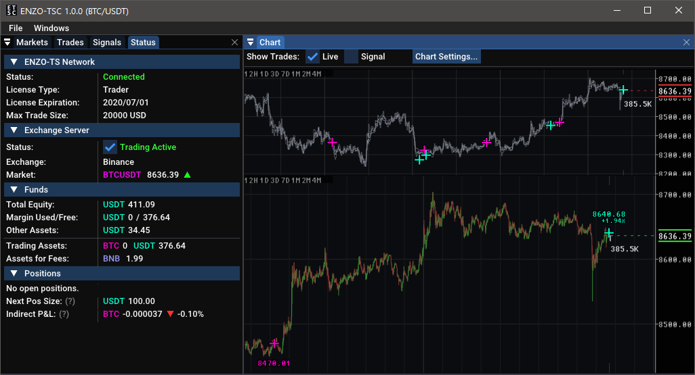
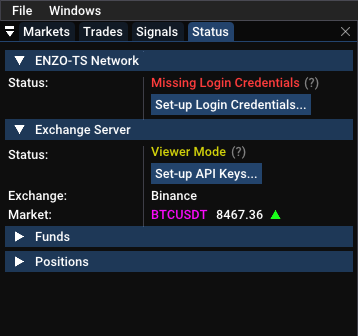
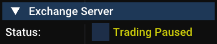
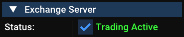
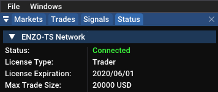
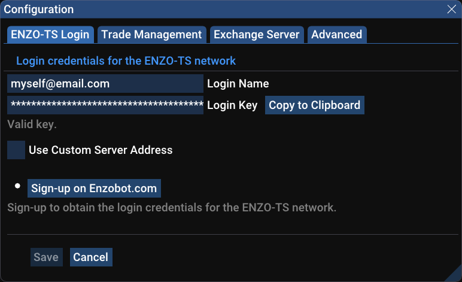
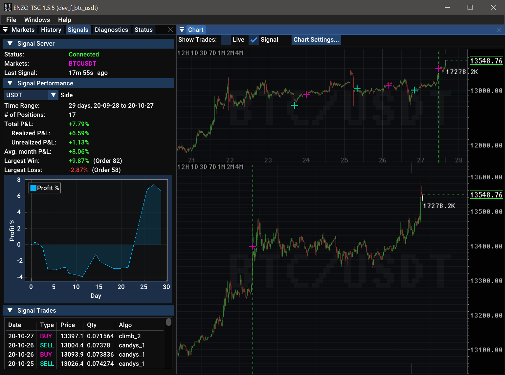
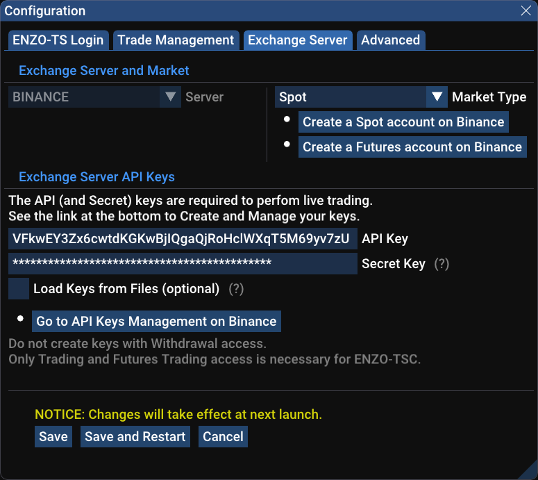
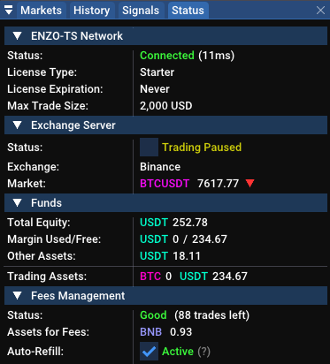
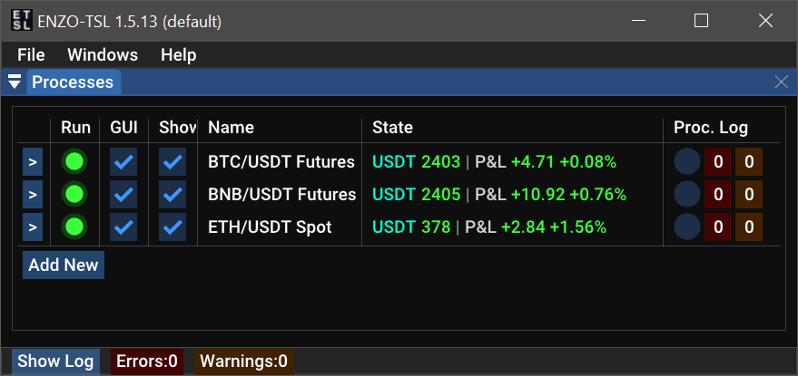

Click on Save and Restart.
The client will quickly restart and finally connect to the TS Network.

ENZO-TSC is a Trading System Client for cryptocurrencies, part of the ENZO-TS suite. It is based on proprietary technology by NEWTYPE K.K., Japan.
ENZO-TSC is a software that automatically executes trades on the your behalf utilizing our proprietary algorithmic models. We currently support BTC/USDT on the Binance exchange, with more options to come in the future.
Signals are generated by our fully-automated trading system running on proprietary algorithms. See the ENZO-TSC web page for more details on the system and the strategies implemented.
This software trades actual assets with actual monetary value. Cryptocurrencies are a high risk investment. The user is strongly advised to only invest in the amounts that he/she is willing to potentially lose.
Our trading model is built and tested to give a statistical edge over the market in the medium and long term. Profit can fluctuate sensibly depending on the market's behavior. It's important to let the system run with a stable investment for months at the time, in order for the statistical edge to be realized.
Apparent missed opportunities and streaks of losing trades may worry the user, but they are a natural part of the process. Winning and losing trades should not be over-analyzed. Some trades may seem clumsy from a human's point of view. It's important to understand that this is part of a model that is profit-focused and that is proven to be effective at the statistical level.
This is a bare minimum minimal guide to start trading. A more detailed guide will follow.
Launch the ENZO-TS installer and follow the instructions.
Check the Run After Login option (suggested) if you want the client to run automatically when you log back in the computer.
Once the installation is complete, the ENZO-TSL launcher will start, which, in turn, will start the ENZO-TSC client.
Notice that, by default, a ENZO-TSL launch icon will be created on the Desktop.
The first time the client is launched, some essential market data will be downloaded from Binance. This process will require several minutes due to bandwidth restrictions from the exchange.
Subsequent launches will be instantaneous.
Once the data fetching is complete. The Status panel on the side of the window will present two buttons to configure the client. 
Click on Set-up Login Credentials... to configure the access to the ENZO-TS Network. This is the network that provides real-time trading signals generated by our system.
Once logged into the network, the client will start receiving signals. Including recent history of trades, useful to judge recent performance of the model.
Click on Set-up API Keys... to set-up trading access to your Binance account. Without the API Keys, the client will be unable to execute trades on your behalf.
Go to Binance and purchase an amount of USDT that you'd like to trade.
Go to the Binance dashboard and enable the option "Using BNB to pay for fees ( 25% discount )"
Notice that the client will automatically purchase a small amount of BNB to be used for trading fees. You can disable this from the Fee Management section of the Status window.
Go to File→Configuration...→Trade Management and select the amount of funds that you'd like to use.
Notice that by default the trade size is limited to 100 USDT, this is intentionally set to an initial low number out of caution.
At the next start, the client will begin trading on the signals that it receives, with the amount specified.
If the exchange's status says Trading Paused, click on the checkbox to change it to Trading Active.
 
You are now set for automatic trading. The client will do the rest. Just make sure that the connection is active. From time to time there may be some network errors coming from the exchange. In most cases the client is able to recover automatically, unless it's a scheduled/unscheduled downtime from the exchange itself.
This is the network thought which the client obtains the trading signals.
To connect to the network, you will first need to sign-up for the service at the ENZO-TSC Signup page.
After your request for access is accepted, a temporary key will be sent to you.
Go to File→Configuration...→ENZO-TS Login and insert login name & key in their relative fields.
Click on Save and Restart.
The client will quickly restart and finally connect to the TS Network.

Congratulations!
On the first connection, the temporary key will be replaced with a permanent key. This is your personal key, and it shouldn't be shared with anybody else. It is a good idea to store it in a safe place, such as a password manager. To do so, go back to File→Configuration...→ENZO-TS Login, and click on Copy to Clipboard to copy the key on the system clipboard.

Notice how the text below the key's input field now reads "Valid key" instead of "Valid temporary key".
The trading signals come with a history of the activity of at least the last 30 days. This history allows to keep an eye on recent performance and display essential stats as well as individual trades.

To visualize the stats, select the Signals panel on the side of the application. This will show the recent performance (P&L), largest win and loss, Equity Curve (fluctuations of profit), and a few other values.
To visualize the individual trades, go to the head of the Chart window, next to Show Trades, uncheck Live and check Signal.
A series of colored crosses will mark the trades. Magenta crosses are Buy trades (acquire BTC), light-green crosses are Sell trades (return to USDT).
In order to actually perform live trades, the client will need to communicate the orders to the exchange (Binance in this case) on your behalf. This is possible via a set of API & Secret keys that are designed for this purpose.
If you don't yet have a Binance account, we provide a standard referral link that you may use while supporting us as well.
If you don't yet have a set of suitable API keys, they can easily be made from the API Management page on Binance. When creating a new set of keys, you'll be asked for a name, this is only for you to remember what they are used for. Among possible options, we suggest keeping the withdraw ability switched off. It's unnecessary for trading.
Once obtained the Binance API keys, go to File→Configuration...→Exchange Server and insert the keys as required.

Click on Save and Restart. If everything goes well, the client will now connect with your API keys, enabling it able to trade on your behalf (see the section below on how to actually enable funds for trading).
At this point the side Status panel should present some additional info coming from your account on the exchange server.

Under the Funds header:
Under the Fees Management header:
In order for the client to execute trades, it's necessary to purchase a wanted amount of USDT.
We also advise to maintain a minimum amount of BNB on the account, in order to benefit from the discounted trading fees (see: Using BNB to Pay for Fees)
Although the generation of orders is fully automated. You are ultimately responsible for deciding the amount of funds that should be used. The Trade Management options allow to do this, and they are very crucial for the success of the investment.
Go to Menu File→Configuration...→Trade Management.

As a general rule, we suggest setting up the desired Fraction of Total Equity, to match the funds that you'd like to invest per-trade, and then refrain from modifying this value too often.
The Importance of a Stable Investment
Liberally increasing or decreasing the size of the funds may adversely affect the final profit. Here is an example of how changing the trading size can worsen the performance:
- The user starts with 1,000 USDT
- The system makes 4 good trades, netting a +5% total profit (total earned: +50 USDT)
- The user, feeling confident, decides to increase the funds from 1,050 to an even 2,000 USDT
- The 5th trade is a -2.5% loss on the 2,000 USDT, or -50 USDT (total earned: 0 USDT)
This is a prime example of how changing the trade size at the "wrong time" can reset the profits.
Of course, things could have gone the other way, but it's important to realize that any change to the funding scheme will affect the P&L in the immediate and it will break the consistency of the investment, whose statistical edge requires a stable investment across several dozen trades to be realized.
Risk Level and Stop-losses
Depending on the volatility of the market, our model risks from -1.5% to -3.0% of the capital afforded for each trade, with the potential to reach -4% per-trade in some rare cases. Notice that risk level and size of the stop-loss don't always match. Some positions may naturally set a -3.5% stop-loss but still maintain a -3% risk level buy purchasing a smaller quantity of BTC. For more details, please visit the ENZO-TSC product page.
Since version 1.1.0, the ENZO-TSL launcher is responsible for managing the ENZO-TSC application, which does the actual trading.

The launcher has two main functions:
Use the Run checkbox next to each process in the list to run or stop the desired ENZO-TSC instance. Notice that a general 10 seconds delay is applied when changing the state, in order to minimize errors from accidental clicks.
Use the Show Windows checkbox allows to show or hide the actual client's window. Notice that the client will continue to function correctly also when the window is not visible. The benefit of hiding the client's window is to reduce clutter and minimize CPU and GPU usage.
The Log and Process Log, respectively show the log of the launcher and the log of the selected process (the TSC client), as long as the entry in the TSL is selected with the mouse.
The viewer (ENZO-TSV) is a version of the client that cannot perform trades. This is useful to monitor the situation from a different computer.
For the TSV, a login to the ENZO-TS network is optional, and only needed to monitor the trade signals.
A login to the Binance account is however necessary. For this purpose we suggest using a set of API keys that has trading disabled, other than disabling withdrawal, since they are both unnecessary for the viewer.
The Log window shows raw text data mostly relative to the communication with the Exchange. Most of the data can be ignored, but it may be useful to look for the occasional red-colored (error) or orange-colored (warning) messages.
API Keys can easily be generated from Binance's API Management page.
In case of mistyping of a key, the exchange will respond with an uncorrelated error, since there's no mechanism to verify that a key is valid.
This software can only trade on your behalf on the BTC/USDT market, however, when generating API Keys, it's suggested to not enable the withdrawal access. Withdrawal access is unnecessary and it may be a security risk, would the keys end up in the wrong hands.
API Keys are only visible to the user. This software will never try to communicate them to our server or anywhere else.
This software stores keys on a local configuration file. The Secret key will be encrypted. This is an added form of security, however the user should still refrain from sharing their own configuration file to others.
This window gives are real-time view of the most active crypto pairs on Binance. The Change value allows to filter out markets where price has little or no movement. The Health value filters out those markets with poor liquidity. This is a very important metric, since markets with poor liquidity will often show sudden spikes in price only because of the relative lack of activity.

Above is a view of the Market Watch. Here the criteria selects only 10 markets out of 714 possible.
As a reminder, the current version of ENZO-TSC only supports BTC/USDT signals. This feature is meant for advanced user that wants to keep an eye on other markets.
A display of HFT activity is included as an option. This doesn't have an immediate practical use, but it might be a compelling visualization tool for some.
To enable this visualization, click on Chart Display... at the top of the Chart window and select High-Frequency Data for the desired price display.

Above is a clip of HFT activity display in the client. 1-minute candles are shown as a reference.
The Volume Heat-Map shows the distribution of volume in 2-dimensions. This visualization may be useful to determine the hot-spots that define price levels.
To enable this visualization, click on Chart Display... at the top of the Chart window and select Volume Heat-Map for the desired price display.
This is also of no immediate practical use, and it's only exposed for the advanced user that may be doing their own research.

You can reach us via the dedicated on-line contact form, or via email us at info@enzobot.com .
We are also available for corporate consulting.